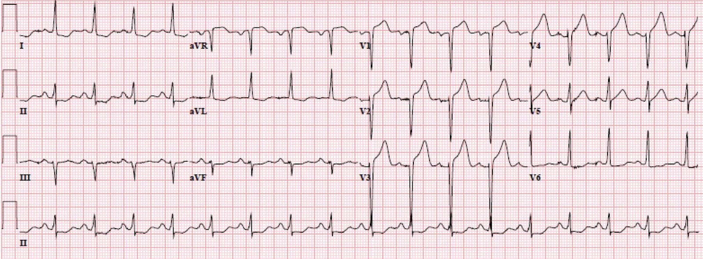
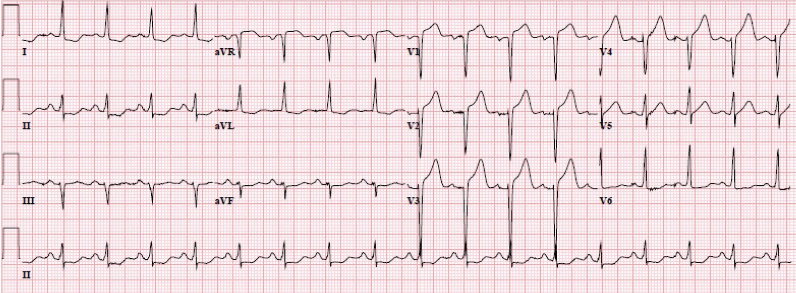
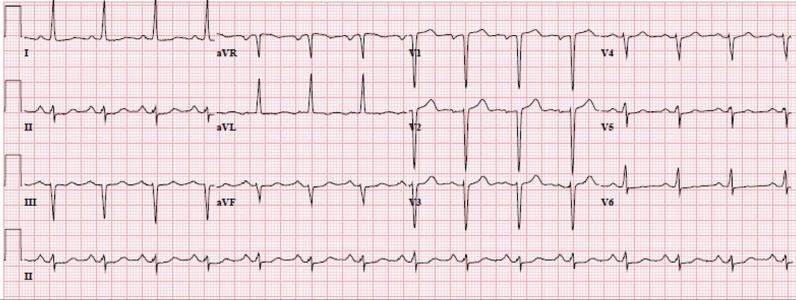
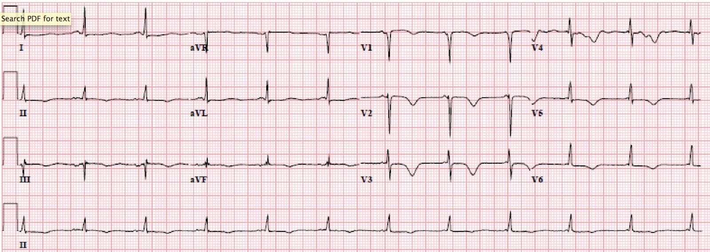
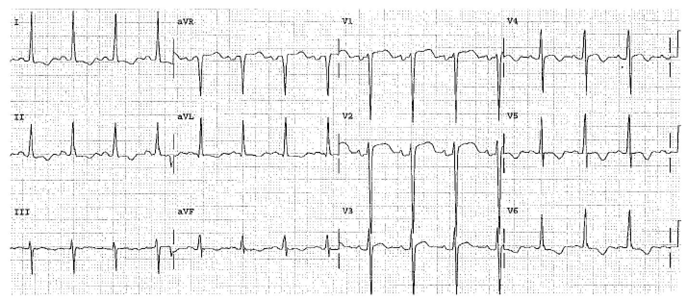
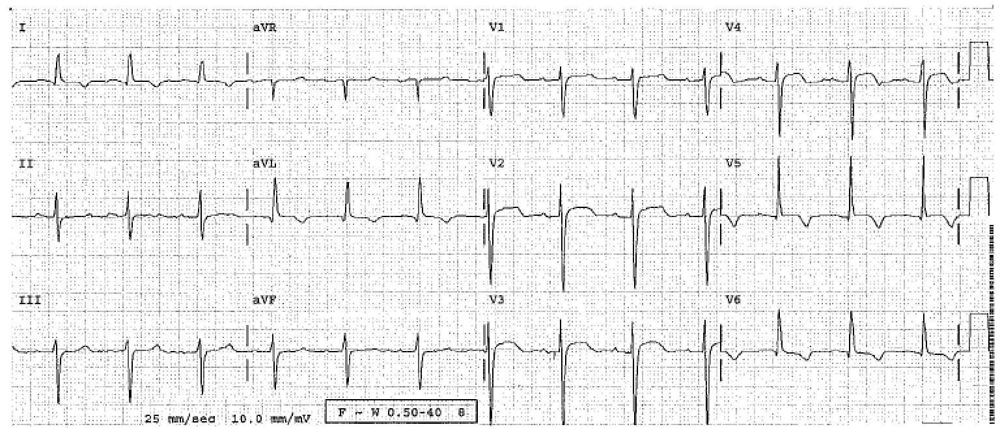
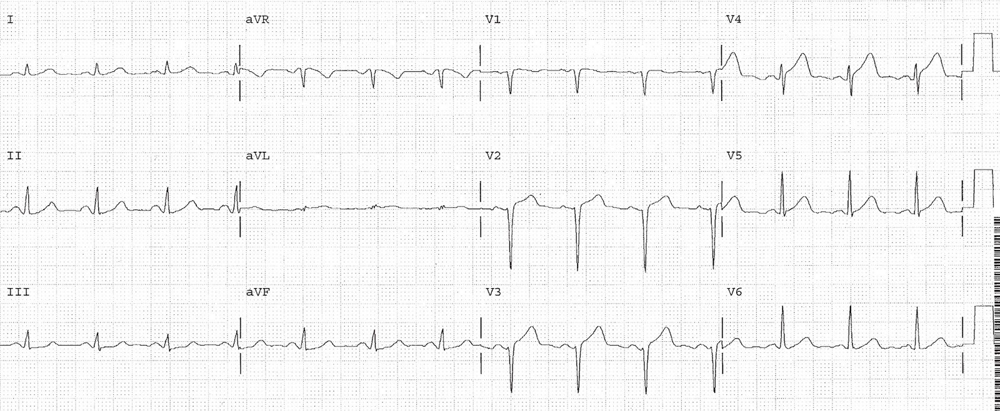
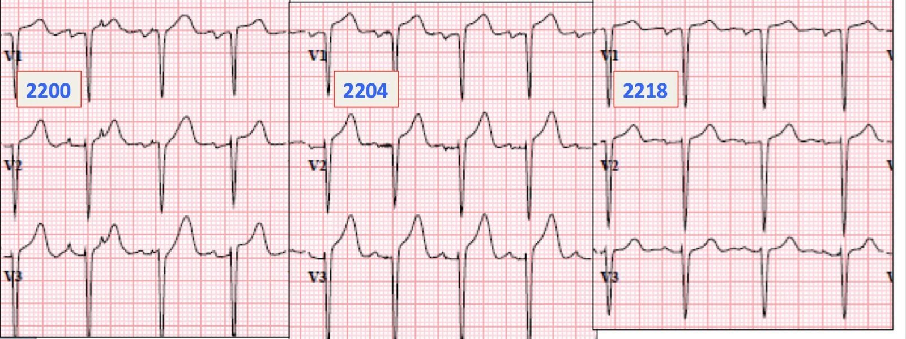
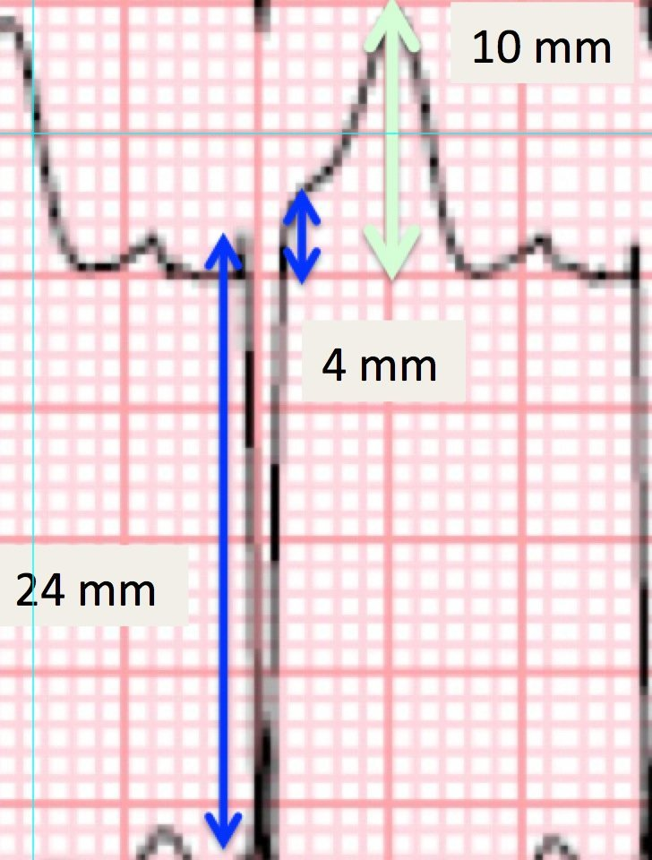
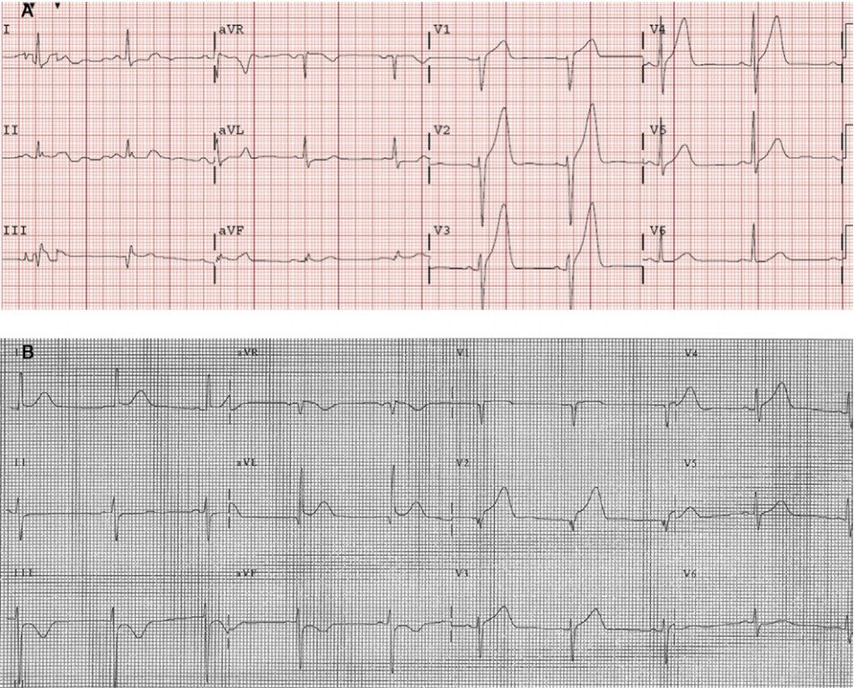

29/12/2015 — LVH kèm ST chênh lên thành trước. Khi nào là STEMI thành trước?
Bản dịch tiếng Việt của bài "LVH with anterior ST Elevation. When is it anterior STEMI?" – Dr. Smith’s ECG Blog. Giữ nguyên toàn bộ 12 hình ảnh và 1 video của bản gốc.
Đây là một ca bệnh tuyệt vời khác, phần bàn luận do Brooks Walsh đóng góp, kèm một số bổ sung của Smith.
Ở đây chúng tôi bàn về cách phân biệt ST chênh lên dương tính thật với ST chênh lên dương tính giả trong bối cảnh phì đại thất trái (LVH).
Bạn nghĩ gì về điện tâm đồ này ở một bệnh nhân đau ngực?


Bệnh sử
Một phụ nữ trung niên có tiền sử tăng huyết áp (HTN), nhưng chưa từng có bệnh động mạch vành (CAD), đến
khoa cấp cứu (ED) vì đau ngực. Cơn đau nhẹ và từng lúc trong 2
tuần, nhưng trở nên dữ dội hơn vào đêm đến viện. Dấu hiệu
sinh tồn đáng chú ý là tăng huyết áp rõ rệt. Một điện tâm đồ được
ghi tại khu phân loại (triage):
Điện tâm đồ #1 lúc 0000 giờ.
ST chênh lên không đáng kể ở V1 và V2. QRS ở aVL thay đổi về chiều cao,
nhưng có một phức bộ có biên độ sóng R lớn hơn 11 mm, điều này rất đặc hiệu cho LVH. ST chênh xuống
ở V6, cùng sóng T dẹt/đảo ngược ở V6 và aVL, cũng ủng hộ LVH
Điện tâm đồ được ghi lại để có bản ghi rõ hơn và vì cơn đau của bệnh nhân tăng lên 10/10 ngay lúc đó.
Điện tâm đồ #2 lúc 0004 giờ (đây là bản ghi ở đầu bài).


Tuy nhiên, máy tính thường bị LVH đánh lừa.
Tiêu chuẩn của Armstrong và cs. đòi hỏi tỷ số ST/S đạt 25% để chẩn đoán STEMI khi có LVH. Đây cũng chính là con số được dùng cho tiêu chuẩn Sgarbossa cải biên trong LBBB. Nhưng ở đây tỷ số chỉ là 14% – 18%, nên theo các tiêu chuẩn đó thì đây không phải tắc LAD.
Bác sĩ lo ngại STEMI, nhưng cũng sợ rằng mình đang phản ứng thái quá, vì có khả năng LVH đang tạo ra một hình ảnh “giả STEMI” (STEMI-mimic).
Bất chấp những lo ngại đó, bác sĩ vẫn kích hoạt phòng thông tim (cath lab).
Siêu âm tim tại giường được thực hiện:
Có LVH, nhưng cũng có rối loạn vận động thành vách liên thất.
Không có siêu âm tim trước đó để so sánh.
Điện tâm đồ được ghi lại khi bệnh nhân cho biết cơn đau đã giảm.
Điện tâm đồ #3 lúc 0018 giờ.


ở V5, V6, cùng ST chênh xuống ở chuyển đạo I, và sóng T đảo ngược
nhẹ ở aVL. Một lần nữa, tất cả các yếu tố này ủng hộ chẩn đoán
LVH trên điện tâm đồ
Dù vậy, bệnh nhân vẫn được đưa đi chụp mạch vành cấp cứu, phát hiện một tổn thương hẹp 99% ở LAD đoạn giữa và đã được đặt stent.
Điện tâm đồ #4, 24 giờ sau


Có thể chẩn đoán ACO (STEMI) khi đồng thời có LVH không?
LVH có thể giống tắc mạch vành cấp (acute coronary occlusion, ACO) thành trước trên điện tâm đồ.1 Bác sĩ cấp cứu và bác sĩ tim mạch có thể gặp khó khăn khi phân biệt hai tình trạng này,4 và LVH thường được nêu là một nguyên nhân gây chụp mạch vành cấp cứu “dương tính giả” vì nghi ACO.5,6
Nhiều cách tiếp cận đã được đề xuất để phân biệt điện tâm đồ của LVH mạn tính với điện tâm đồ của bệnh nhân có ACO chồng lên, nhưng chưa cách nào tỏ ra thỏa đáng. Ví dụ, có thể so sánh điện tâm đồ với các bản ghi cũ hơn. Tuy nhiên, đoạn ST ở bệnh nhân LVH có thể thay đổi đáng kể theo thời gian dù không có thiếu máu cục bộ.3 Một số tác giả cũng đề xuất rằng sóng T đảo ngược (TWI) thường không đối xứng của LVH có thể phân biệt được với TWI thường đối xứng của thiếu máu cục bộ cơ tim. Tuy nhiên, không có bằng chứng nào được dẫn ra để ủng hộ điều này.3
STE dạng lõm hay dạng lồi?
LVH thường có đoạn ST lõm hướng lên, nhưng cũng có thể gặp đoạn ST LỒI (conVEX) hướng lên, ví dụ trong các ca sau từ sách của Dr Smith: The ECG in Acute MI:




Cũng lưu ý rằng sóng T không cao!
Ngược lại, ACO của LAD thường gây STE ở các chuyển đạo trước với đoạn ST lồi hướng lên. Tuy nhiên, Smith đã chỉ ra rằng nhiều ca ACO của LAD (không có LVH) có hình thái LÕM (conCAVE) hướng lên trên điện tâm đồ ban đầu.8 (Điều này một phần phụ thuộc vào thời gian: bệnh nhân có khoảng thời gian từ lúc khởi phát triệu chứng đến lúc ghi điện tâm đồ ngắn hơn thì ít có khả năng biểu hiện dạng lồi.)
Một ví dụ về tắc LAD cấp với đoạn ST lõm hướng lên ở mọi chuyển đạo từ V2-V6:


Có quy tắc “Sgarbossa cải biên theo Smith” cho ST chênh lên trong LVH không?
Tương tự STE thành trước gặp trong LBBB, mức độ STE ở các chuyển đạo V1-V3 của bệnh nhân LVH nói chung tương xứng với độ sâu của sóng S đi trước. Trong trường hợp LBBB, đã có nghiên cứu cho thấy STE vượt quá 25% độ sâu sóng S đi trước là cao không tương xứng, và giúp nhận diện ACO với độ đặc hiệu rất tốt.9 Liệu điều này có áp dụng được trong LVH không?
Một phân tích hồi cứu của Armstrong và cs. gợi ý rằng, khi có LVH, STE ở V1-V3 vượt quá 25% của phức bộ QRS đi trước có thể là một phương tiện chính xác để loại trừ ACO, và khá nhạy để nhận diện ACO.
Bình luận của Smith: Bài báo của Armstrong không có phương pháp phù hợp để nghiên cứu vấn đề này. Phương pháp phù hợp sẽ là lấy các điện tâm đồ liên tiếp có điện thế cao và ST chênh lên ở chính các chuyển đạo có ST chênh lên, chia chúng thành nhóm có và không có tắc LAD, rồi xem tỷ số ST/S khác nhau thế nào. Tôi đã đặt ở cuối bài này một số ví dụ từ bài báo của Armstrong. Bạn sẽ thấy đó không phải là những ca khiến bạn gặp khó khăn. Tôi đã hai lần cố gắng nghiên cứu chủ đề này và đều thất bại vì có rất ít ca vừa có điện thế cao ở V1-V4 vừa có tắc LAD. Thực tế, ngay cả ca này cũng không phù hợp, vì điện thế ở các chuyển đạo bị ảnh hưởng không đạt tiêu chuẩn LVH!
Vì sao khó nghiên cứu tắc LAD (OMI thành trước) khi có LVH? Lý do theo kinh nghiệm riêng của tôi là thế này: tôi đã thấy, và tôi tin rằng điều này phổ biến, là khi LAD bị tắc, biên độ sóng S ở V1-V3 giảm mạnh và QRS không còn biểu hiện điện thế cao. Vì vậy bạn sẽ hiếm khi gặp một bệnh nhân tắc LAD cấp mà có sóng S sâu ở V1-V3. Và những bệnh nhân có điện tâm đồ trước đó biểu hiện LVH với sóng S sâu như vậy sẽ có sóng S biên độ thấp hơn nhiều sau khi tắc.
Quan trọng nhất, vì STE trong LVH hiếm khi cao quá 4 mm, tiêu chuẩn 25% nhiều khả năng là quá kém nhạy. Ví dụ, ở một bệnh nhân có sóng S sâu 30 mm, STE sẽ phải vượt quá gần 7 mm.

Dùng sóng T thay vì đoạn ST?
Chưa rõ liệu thiếu máu cục bộ có làm thay đổi chiều cao hoặc hình thái sóng T trong LVH hay không.3 Trong ca của chúng tôi, sự tăng lên rồi giảm xuống có tính động của sóng T ở các chuyển đạo trước rất nổi bật, gợi ý sóng T tối cấp.10


Tuy nhiên, cho đến nay vẫn khó định nghĩa sóng T tối cấp ở bệnh nhân có điện tâm đồ nền bình thường, chưa nói đến những người có LVH. Đáng tiếc là, dù một số tác giả đã đề xuất rằng một số tiêu chuẩn nhất định (biên độ sóng T/biên độ QRS lớn hơn 75%) có thể phân biệt ACO với LVH,11 nghiên cứu mà họ trích dẫn lại đã loại trừ các bệnh nhân có LVH.10
Hiện nay, tính đến năm 2025, đã có một định nghĩa định lượng về sóng T tối cấp, nhưng định nghĩa này được xây dựng và thẩm định trên các ca KHÔNG có LVH.
Sóng T tối cấp được định nghĩa bởi “độ đầy đặn” (bulk) của chúng, xác định bằng 1) “diện tích dưới đường cong tương đối so với kích thước QRS” và 2) tính đối xứng (sóng T tối cấp đối xứng hơn sóng T bình thường). Diện tích dưới đường cong phụ thuộc vào 3 yếu tố: 1) chiều cao hay biên độ 2) khoảng QT và 3) hình dạng của đoạn ST dốc lên (rất lõm cho AUC thấp, rất lồi cho AUC cao.
LVH có giống phình thất trái không?
Hành vi tái cực của LVA (phình thất trái) nhiều khả năng khác với của LVH. Tuy nhiên, một quy tắc tương tự để nhận diện ACO của LAD chồng lên khi có STE tồn tại dai dẳng sau nhồi máu cơ tim cũ (còn gọi là “phình thất trái”, hay LVA) đã được thẩm định.12 Nhiều khả năng có nhồi máu cơ tim cấp nếu tỷ số biên độ sóng T trên biên độ QRS vượt quá 0.36 ở bất kỳ chuyển đạo nào từ V1-V4 khi bệnh nhân có dấu hiệu LVA trên điện tâm đồ.
Chưa rõ liệu có thể dùng cùng cách phân tích này ở bệnh nhân LVH hay không. Tuy nhiên, rõ ràng là ở chuyển đạo V3 trong Hình 2, Tamp/QRSamp (biên độ T/biên độ QRS) vượt quá 0.36 với một khoảng cách đáng kể. (Điều này cũng đúng ở chuyển đạo V2, với 7/14 = 50%).


Kết luận
Tại thời điểm này đây hoàn toàn chỉ là phỏng đoán, nhưng có lẽ chúng ta nên đo chiều cao sóng T thường xuyên hơn khi nghi ngờ ACO. Theo kinh nghiệm thực tế, việc xem xét kỹ sóng T đã tỏ ra hữu ích khi không thấy ST chênh lên đủ để chẩn đoán, và thậm chí khi máy tạo nhịp thất đã che khuất đoạn ST.
Minh họa vì sao bài báo của Armstrong không giúp chúng ta trả lời câu hỏi đang bàn:
Hai điện tâm đồ này lấy từ bài báo của Armstrong (5) và được cho là minh họa cách tỷ số ST/S lớn hơn 25% giúp phân biệt LVH với STEMI


Tài liệu tham khảo
1. Huang HD, Birnbaum Y. ST elevation: differentiation between ST elevation myocardial infarction and nonischemic ST elevation. [ST chênh lên: phân biệt giữa nhồi máu cơ tim ST chênh lên và ST chênh lên không do thiếu máu cục bộ.] J Electrocardiol. 2011;44(5):494.e1-e494.e12. doi:10.1016/j.jelectrocard.2011.06.002.
2. Brady
WJ, Chan TC, Pollack M. Electrocardiographic manifestations: patterns
that confound the EKG diagnosis of acute myocardial infarction—left
bundle branch block, ventricular paced rhythm, and left ventricular
hypertrophy1. [Biểu hiện điện tâm đồ: các hình ảnh gây nhiễu chẩn đoán nhồi máu cơ tim cấp trên điện tâm đồ — blốc nhánh trái, nhịp tạo nhịp thất và phì đại thất trái.] J Emerg Med. 2000;18(1):71-78. doi:10.1016/S0736-4679(99)00178-X.
3. Birnbaum Y, Alam M. LVH and the diagnosis of STEMI – how should we apply the current guidelines? [LVH và chẩn đoán STEMI – nên áp dụng các hướng dẫn hiện hành như thế nào?] J Electrocardiol. 2014;47(5):655-660. doi:10.1016/j.jelectrocard.2014.06.001.
4. Brady
WJ. Electrocardiographic left ventricular hypertrophy in chest pain
patients: Differentiation from acute coronary ischemic events. [Phì đại thất trái trên điện tâm đồ ở bệnh nhân đau ngực: phân biệt với các biến cố thiếu máu cục bộ mạch vành cấp.] Am J Emerg Med. 1998;16(7):692-696. doi:10.1016/S0735-6757(98)90179-6.
5. Armstrong
EJ, Kulkarni AR, Bhave PD, và cs. Electrocardiographic Criteria for
ST-Elevation Myocardial Infarction in Patients With Left Ventricular
Hypertrophy. [Tiêu chuẩn điện tâm đồ của nhồi máu cơ tim ST chênh lên ở bệnh nhân phì đại thất trái.] Am J Cardiol. 2012;110(7):977-983. doi:10.1016/j.amjcard.2012.05.032.
6. Shamim
S, McCrary J, Wayne L, Gratton M, Bogart DB. Electrocardiograhic
findings resulting in inappropriate cardiac catheterization laboratory
activation for ST-segment elevation myocardial infarction. [Các dấu hiệu điện tâm đồ dẫn đến kích hoạt phòng thông tim không phù hợp vì nhồi máu cơ tim ST chênh lên.] Cardiovasc Diagn Ther. 2014;4(3):215-223. doi:10.3978/j.issn.2223-3652.2014.05.01.
7. Schocken DD. Electrocardiographic left ventricular strain pattern: Everything old is new again. [Hình ảnh tăng gánh thất trái trên điện tâm đồ: chuyện cũ lại thành mới.] J Electrocardiol. 2014;47(5):595-598. doi:10.1016/j.jelectrocard.2014.06.005.
8. Smith SW. Upwardly concave ST segment morphology is common in acute left anterior descending coronary occlusion. [Hình thái đoạn ST lõm hướng lên thường gặp trong tắc cấp động mạch liên thất trước.] J Emerg Med. 2006;31(1):69-77. doi:10.1016/j.jemermed.2005.09.008.
9. Meyers
HP, Limkakeng Jr. AT, Jaffa EJ, và cs. Validation of the modified
Sgarbossa criteria for acute coronary occlusion in the setting of left
bundle branch block: A retrospective case-control study. [Thẩm định tiêu chuẩn Sgarbossa cải biên cho tắc mạch vành cấp trong bối cảnh blốc nhánh trái: một nghiên cứu bệnh-chứng hồi cứu.] Am Heart J. 2015;170(6):1255-1264. doi:10.1016/j.ahj.2015.09.005.
10. Collins MS, Carter JE, Dougherty JM, Majercik SM, Hodsden JE, Logue EE. Hyperacute T-wave criteria using computer ECG analysis. [Tiêu chuẩn sóng T tối cấp dùng phân tích điện tâm đồ bằng máy tính.] Ann Emerg Med. 1990;19(2):114-120. doi:10.1016/S0196-0644(05)81792-5.
11. Sovari AA, Assadi R, Lakshminarayanan B, Kocheril AG. Hyperacute T wave, the early sign of myocardial infarction. [Sóng T tối cấp, dấu hiệu sớm của nhồi máu cơ tim.] Am J Emerg Med. 2007;25(7):859.e1-e859.e7. doi:10.1016/j.ajem.2007.02.005.
12. Klein
LR, Shroff GR, Beeman W, Smith SW. Electrocardiographic criteria to
differentiate acute anterior ST-elevation myocardial infarction from
left ventricular aneurysm. [Tiêu chuẩn điện tâm đồ để phân biệt nhồi máu cơ tim ST chênh lên thành trước cấp với phình thất trái.] Am J Emerg Med. 2015;33(6):786-790. doi:10.1016/j.ajem.2015.03.044.
13. Neuman
Y, Cercek B, Aragon J, và cs. Comparison of frequency of left
ventricular wall motion abnormalities in patients with a first acute
myocardial infarction with versus without left ventricular hypertrophy. [So sánh tần suất rối loạn vận động thành thất trái ở bệnh nhân nhồi máu cơ tim cấp lần đầu có so với không có phì đại thất trái.] Am J Cardiol. 2004;94(6):763-766. doi:10.1016/j.amjcard.2004.05.061.
14. Smith SW, Meyers HP. Hyperacute T-waves Can Be a Useful Sign of Occlusion Myocardial Infarction if Appropriately Defined. [Sóng T tối cấp có thể là dấu hiệu hữu ích của nhồi máu cơ tim do tắc nếu được định nghĩa phù hợp.] Ann. Emerg. Med. [Internet]. 2023;Truy cập tại: http://dx.doi.org/10.1016/j.annemergmed.2023.01.011